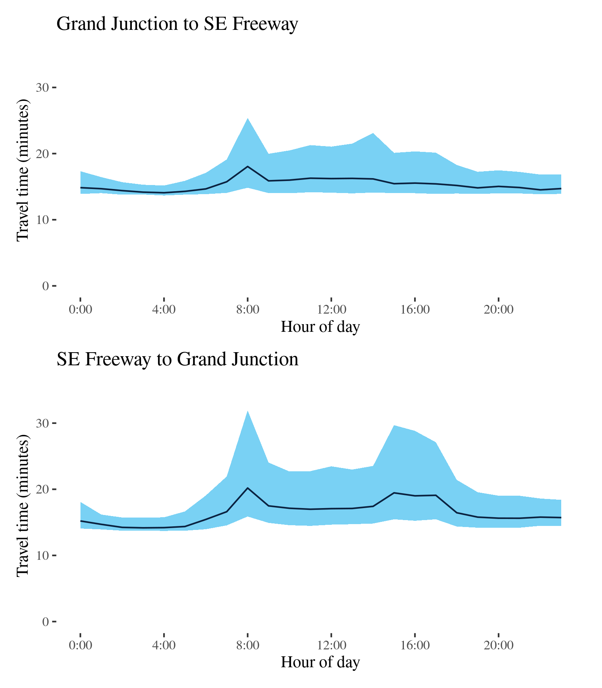

Congestion Report 2020
Congestion Report 2020Adelaide
The figure below shows all 9 selected Adelaide freight vehicle routes and an index of the METR across each route.
The figure below shows changes in the METRs and MEURs across each of the 9 selected Adelaide freight vehicle routes. Adelaide routes exhibited no consistent increase in travel time congestion although the city-wide measure showed a small increase. Adelaide was alone amongst the 5 capital cities in showing an increase in mean excess travel time between 2019 and 2020, likely because of shorter-lived COVID-19 restrictions and less motorway routes with distinct commuting peaks. The only motorway route, the A2-M2, showed no appreciable change in either direction.
Changes in travel time uncertainty congestion were correlated with changes in time congestion leading to a slight increase in the city-wide mean excess uncertainty index measure.

A14 - Port Road to Southern Expressway / Southern Expressway to Port Road
This surface route traverses Adelaide’s eastern suburbs and links Port Road (A7) at West Croydon in the north with the A13 at Darlington in the south. It passes Richmond near the Adelaide Airport and Plympton along the way. The route comprises several different roads including Holbrooks Road, Marion Road and Henley Beach Road.
| Direction | Best travel time | Longest median travel time | METR | Least uncertainty range | Most uncertainty range | MEUR | Distance |
|---|---|---|---|---|---|---|---|
| Port Road to Southern Expressway | 0:17:21 | 0:27:17 | 1.197 | 0:06:39 | 0:19:09 | 1.757 | 15.0 |
| Southern Expressway to Port Road | 0:18:37 | 0:23:08 | 1.128 | 0:07:28 | 0:17:10 | 1.65 | 15.0 |
For southbound trips, the lowest median travel times and uncertainty were at 6am with median travel times of 17 minutes and an interquartile range of 7 minutes. The longest median travel times and greatest uncertainty were at 2am in the “third peak” with a median of 27 minutes and an interquartile range of 19 minutes, down 75 seconds and 15 minutes, respectively, on 2019. The morning and afternoon peaks witnessed in 2019 have been eliminated but the “third peak” with delays around Plympton remained.
The shortest median travel time and lowest travel time uncertainty northbound were at 1am and 11pm with a median travel time of 19 minutes and an interquartile range of 7.5 minutes. The longest median travel times were 23 minutes and the greatest travel time uncertainty with an interquartile range of 17 minutes, both at 3pm, down 3 and 5 minutes, respectively, on 2019. Unlike 2019 morning and afternoon peaks were not highly distinct although travel times and uncertainty were slightly elevated throughout business hours. There was a small “third peak” around 2am also apparent in this direction.
A15 - ANZAC Hwy to Port Road / Port Road to ANZAC Hwy
This route traverses the western suburbs of Adelaide between Glenelg and Queenstown-Alberton. Its northern sections run parallel to the A14 route in this report, but passes west of Adelaide Airport. This route is also known as Tapleys Hill Road.

| Direction | Best travel time | Longest median travel time | METR | Least uncertainty range | Most uncertainty range | MEUR | Distance |
|---|---|---|---|---|---|---|---|
| ANZAC Hwy to Port Road | 0:12:57 | 0:17:24 | 1.139 | 0:01:39 | 0:09:58 | 3.366 | 13.1 |
| Port Road to ANZAC Hwy | 0:12:38 | 0:15:54 | 1.101 | 0:01:19 | 0:09:37 | 3.559 | 13.0 |
The best travel times and lowest uncertainty travelling north from Glenelg to Port Road were experienced at midnight with a median travel time of 13 minutes and an interquartile range of 2 minutes. The longest median travel times were in the afternoon peak at 5pm with a median of 17 minutes and the greatest uncertainty in the morning with an interquartile range of 10 minutes. Like 2019, there were two travel time peaks in 2020, but more equal than they were in 2019. Travel time uncertainty during business hours was higher than in 2019.
The shortest and least uncertain travel times southbound on the route were at midnight with a median travel time of 13 minutes an interquartile range of 79 seconds. The longest and most uncertain travel times were experienced in the afternoon peak at 3pm with a median time of 16 minutes and an interquartile range of 10 minutes, down 2 and 5 minutes, respectively, from 2019. Delays were fairly evenly distributed but were particularly evident near Sir Donald Bradman Drive and Grange Road.
The route exhibits significant travel time variability, in both directions, during business hours, presumably due to light vehicle traffic.
A16 - Hampstead Road to Outer Harbor / Outer Harbor to Hampstead Road
This route connects the Port of Adelaide, at Outer Harbor, and the north Adelaide at Hampstead Road (A17). It uses Grand Junction Road, Causeway Road and Semaphore Road and Victoria Road through the suburbs of Ethelton and Birkenhead.

| Direction | Best travel time | Longest median travel time | METR | Least uncertainty range | Most uncertainty range | MEUR | Distance |
|---|---|---|---|---|---|---|---|
| Hampstead Road to Outer Harbor | 0:23:18 | 0:28:35 | 1.098 | 0:06:55 | 0:19:40 | 1.747 | 20.7 |
| Outer Harbor to Hampstead Road | 0:23:12 | 0:28:56 | 1.091 | 0:07:16 | 0:19:15 | 1.543 | 20.8 |
The best travel times and lowest uncertainty travelling from Hampstead Road to Outer Harbor were experienced at 4am with a median travel time of 23 minutes and an interquartile range of 7 minutes. The longest median travel times and the greatest uncertainty were in the afternoon peak at 4pm with a median travel time of 29 minutes and an interquartile range of 20 minutes. These were similar to 2019; however the morning peak was not as pronounced in 2020. Delays were spread fairly evenly along the route but more apparent on Grand Junction Road and most apparent near the intersection with the Princes Highway (A1) at Gepps Cross in the afternoon peak.
The best travel times and lowest uncertainty travelling from Outer Harbor to Hampstead Road were at 4am with a median travel time of 23 minutes and an interquartile range of 7 minutes. The longest median travel times and greatest uncertainty were experienced in the afternoon peak at 4pm with a median travel time of 29 minutes and an interquartile range of 19 minutes. This was also similar to 2019 but with a slightly smaller morning peak. Delays were also more apparent along Hampstead Road but most severe near Hampstead Road.
In both directions there was heightened uncertainty throughout business hours.
A17 - Grand Junction to SE Freeway / SE Freeway to Grand Junction
This route follows the A17 south from the A16 (Grand Junction Road) through Adelaide’s eastern suburbs and connects to the South Eastern Freeway and Cross Road at Glen Osmond. The route traverses Hampstead Road, Ascot Avenue and Portrush Road along its length.

| Direction | Best travel time | Longest median travel time | METR | Least uncertainty range | Most uncertainty range | MEUR | Distance |
|---|---|---|---|---|---|---|---|
| Grand Junction to SE Freeway | 0:14:05 | 0:18:03 | 1.087 | 0:01:29 | 0:10:33 | 3.197 | 13.6 |
| SE Freeway to Grand Junction | 0:14:10 | 0:20:12 | 1.161 | 0:01:59 | 0:16:01 | 3.457 | 13.6 |
The best travel times and lowest uncertainty southbound were at 4 and 3am with a median travel time of 14 minutes and an interquartile range of 1.5 minutes. The longest median travel times and greatest uncertainty were in the morning peak at 8am with a median travel time of 18 minutes and an interquartile range of 10.5 minutes. Whilst the AM peak travel time and uncertainty were similar to 2019 levels, the afternoon peak disappeared, and peak uncertainty was down by 11 minutes. This is a rare example in this report of an afternoon peak improving more than a morning peak. Delays were fairly evenly distributed along the route.
The best travel times and lowest uncertainty northbound were at 3am with median times of 14 minutes and an interquartile range of 2 minutes. The longest median travel times and greatest uncertainty were experienced during the morning peak at 8am with a median of 20 minutes and an interquartile range of 16 minutes, an increase of 1.5 and 5 minutes, respectively, from 2019. There was also a smaller but more extended peak in the afternoon. Delays were fairly evenly distributed along the route but with indications of greater delays at the intersection with North East Road (A10). This was largely unchanged from 2019.
The route exhibits greater travel time uncertainty throughout business hours in both directions.

A20 - Grand Junction Road to Sturt Highway / Sturt Highway to Grand Junction Road
This route follows the A20 (comprising Main North Road and the Gawler Bypass) from Grand Junction Road at Gepps Cross north to the Stuart Highway near Gawler, and passes through Evanston Park, Blakeview, Elizabeth, Salisbury Park and Mawson Lakes.
| Direction | Best travel time | Longest median travel time | METR | Least uncertainty range | Most uncertainty range | MEUR | Distance |
|---|---|---|---|---|---|---|---|
| Grand Junction Road to Sturt Highway | 0:25:12 | 0:33:27 | 1.199 | 0:03:16 | 0:29:24 | 5.192 | 32.4 |
| Sturt Highway to Grand Junction Road | 0:25:24 | 0:33:54 | 1.172 | 0:06:18 | 0:25:34 | 2.484 | 32.6 |
The best travel times and lowest uncertainty on the northbound lanes were experienced at 2am with a median travel time of 25 minutes and an interquartile range of 3 minutes. The longest median travel times were at 4pm with a median of 33 minutes and the greatest uncertainty were at 5pm with an interquartile range of 29 minutes. There was a distinct afternoon peak in uncertainty but not travel times. Delays were more apparent at the beginning of the route.
The best travel times and the lowest uncertainty travelling south were at 3 and 4am with a median travel time of 25 minutes and an interquartile range of 6 minutes. The longest median travel times and the greatest uncertainty were, like the reverse direction, experienced in the afternoon peak at 4pm with a median of 34 minutes and an interquartile range of 26 minutes. Delays were again more evident in the southern portions of the route.
This route, like other key routes in Adelaide, exhibits greater travel time uncertainty throughout business hours in both directions. Moreover, the increase in travel time variation is more significant than the increase in median travel times, suggesting that a small but significant proportion of road users experience significant delays on this route. Overall there was little change from 2019 although the “third peak” was slightly more apparent.
A22 - Park Terrace to Port Wakefield Road / Port Wakefield Road to Park Terrace
This route follows the A22 north from Park Terrace at north Adelaide and meets the Princes Highway (A1, Port Wakefield Road) at Gepps Cross. It uses Churchill Road and Cavan Road, crossing Grand Junction Road (A16) along its way.
| Direction | Best travel time | Longest median travel time | METR | Least uncertainty range | Most uncertainty range | MEUR | Distance |
|---|---|---|---|---|---|---|---|
| Park Terrace to Port Wakefield Road | 0:08:30 | 0:09:48 | 1.084 | 0:02:14 | 0:05:25 | 1.626 | 7.7 |
| Port Wakefield Road to Park Terrace | 0:08:05 | 0:11:15 | 1.148 | 0:02:29 | 0:07:16 | 1.721 | 7.6 |
The best median travel time northbound from Park Terrace to Port Wakefield Road was 8.5 minutes at 5am and the lowest uncertainty were experienced at 9pm with an interquartile range of over 2 minutes. The longest median travel times and the greatest uncertainty were during the afternoon peak at 3pm with a median travel time of 10 minutes and an interquartile range of 5 minutes. Delays were slightly more apparent near the intersection with Park Terrace. These were largely unchanged from 2019.
The best median travel time travelling south was 8 minutes at 5am and the lowest uncertainty were at 6am with an interquartile range of 2.5 minutes. The longest median travel times and the greatest uncertainty were experienced during the “third peak” at 2am and 4pm with a median travel time of 11 minutes and an interquartile range of 7 minutes, down 2 and 8 minutes, respectively, on 2019. Although there was still a distinct afternoon peak in uncertainty this was much milder than 2019 and the median time afternoon peak had vanished. Delays were fairly evenly distributed along the route but were particularly evident near the CBD.
A3 - ANZAC Highway to SE Freeway / SE Freeway to ANZAC Highway
This route follows Cross Road (A3) between the ANZAC Highway (A5) and the South Eastern Freeway at Glen Osmond. It traverses Adelaide’s Southern Suburbs.

| Direction | Best travel time | Longest median travel time | METR | Least uncertainty range | Most uncertainty range | MEUR | Distance |
|---|---|---|---|---|---|---|---|
| ANZAC Highway to SE Freeway | 0:09:33 | 0:14:10 | 1.205 | 0:02:48 | 0:12:29 | 2.49 | 8.7 |
| SE Freeway to ANZAC Highway | 0:09:08 | 0:14:18 | 1.275 | 0:02:03 | 0:14:04 | 3.535 | 30.5 |
The best travel times and lowest uncertainty travelling eastbound from ANZAC Highway to the South Eastern Freeway were experienced at 5 and 4am with a median travel time of 10 minutes and an interquartile range of 3 minutes. The longest median travel times were during the morning peak at 8am with a median travel time of 14 minutes and an interquartile range of 12.5 minutes experienced at 4pm, slightly down on 2019. Morning and afternoon peaks were similar. Delays were spread evenly along the route, but with indications of more apparent delays near South Road in the morning and closer to the South Eastern Freeway in the afternoon.
The best travel time and lowest uncertainty travelling west was at 4am with a median time of 9 minutes and an interquartile range of 2 minutes. The longest median travel times was 14 minutes experienced during the morning peak at 8am and the greatest uncertainty were at 4pm with an interquartile range of 14 minutes. Morning and afternoon peaks were similar and the main difference from 2019 was lower uncertainty in the afternoon peak and higher uncertainty in the morning peak. Delays were fairly evenly distributed along the route.
A9 - Nelson St to Port Wakefield Road / Port Wakefield Road to Nelson St
This route traverses the light industrial areas on Adelaide’s northern fringe. It links Victoria Road and Nelson Street at Birkenhead and the Princes Highway (Port Wakefield Road, A1) at Mawson Lakes, and is an important link for freight from northern Adelaide to the port. It is known at different points on its route as the Port River Expressway and the Salisbury Highway.
| Direction | Best travel time | Longest median travel time | METR | Least uncertainty range | Most uncertainty range | MEUR | Distance |
|---|---|---|---|---|---|---|---|
| Nelson St to Port Wakefield Road | 0:08:21 | 0:08:41 | 1.013 | 0:01:24 | 0:02:59 | 1.396 | 10.2 |
| Port Wakefield Road to Nelson St | 0:08:13 | 0:09:19 | 1.083 | 0:01:51 | 0:04:57 | 1.763 | 10.2 |
The best travel times travelling east were experienced at 7pm with a median travel time of 8.5 minutes and the lowest uncertainty were at 11pm with an interquartile range of 1.5 minutes. The longest median travel times at 2am with a median of time only 20 seconds longer than the best time. The highest uncertainty was during the afternoon peak at 5pm with an interquartile range of 3 minutes. There was also a milder peak in uncertainty in the morning, similar to that in 2019, but the afternoon uncertainty peak was less pronounced than in 2019. Overall there was little variation over the day.
The best travel time and lowest uncertainty westbound was at 3am with a median time of 8 minutes and an interquartile range of 2 minutes. The longest and most uncertain travel times were at 7am with a median travel time of 9 minutes and an interquartile range of 5 minutes. Uncertainty was somewhat higher than 2019.
A2-M2 - Main South Road to Port River Expressway / Port River Expressway to Main South Road
This route, the only Adelaide route in this report with motorway sections, traverses Adelaide north to south. It follows the A2 and the M2, from the Port River Expressway (A9) at Angle Park and merging with Main South Road at Noarlunga Downs. This route uses the Southern Expressway (M2), South Road (A2) and the North-South Motorway (M2). It does not include the Northern Connector opened in March 2020.
| Direction | Best travel time | Longest median travel time | METR | Least uncertainty range | Most uncertainty range | MEUR | Distance |
|---|---|---|---|---|---|---|---|
| Main South Road to Port River Expressway | 0:34:42 | 0:46:36 | 1.098 | 0:08:04 | 0:36:26 | 2.101 | 40.1 |
| Port River Expressway to Main South Road | 0:33:13 | 0:43:48 | 1.119 | 0:07:00 | 0:33:26 | 2.31 | 39.8 |
The best median travel time travelling north from Noarlunga to the Port River Expressway was 35 minutes at 5am and the lowest uncertainty were experienced at 4am with an interquartile range of 8 minutes. The longest median travel times and the greatest uncertainty were at 4pm during the afternoon peak with a median travel time of 47 minutes and an interquartile range of 36 minutes, down 3 and 9 minutes, respectively, from 2019. Delays during both peaks were more apparent in the surface road sections west of the CBD and on the North-South Motorway.
The best travel times and the lowest uncertainty for southbound trips were at 4 and 5am with a median travel time of 33 minutes and an interquartile range of 7 minutes. The longest and most uncertain travel times were experienced during the afternoon peak at 4pm with a median of 44 minutes and an interquartile range of 33 minutes, down 2 and 7 minutes, respectively, from 2019. There was also a small increase in median travel times in the morning peak. Delays were most apparent on the surface route sections and the northern parts of the Southern Expressway.
In both directions there was increased uncertainty throughout business hours.
The locations of the travel delays suggest both directions were congested primarily due to afternoon traffic leaving inner parts of Adelaide in opposite directions. Compared to 2019, the afternoon peak reduced but the morning peak showed little change in both directions.